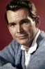

Country:United States, 87 minutes
Spoken languages:
Genres:Family, Comedy
Director(s):Brian Levant
Writer(s):John Hughes, Amy Holden Jones
Video Codec:Unknown
Number: 1290


Certification:PG
Storyline:
The Newton family live in their comfortable home, but there seems to something missing. This "hole" is filled by a small puppy, who walks into their home and their lives. Beethoven, as he is named, grows into a giant of a dog... a St Bernard. Doctor Varnick, the local vet has a secret and horrible sideline, which requires lots of dogs for experiments. Beethoven is on the bad doctor's list.
Cast: 
Medium: Original DVD,
Comments: w/ Beethoven's 2nd
Loaned: No
Aspect ratio: Unknown